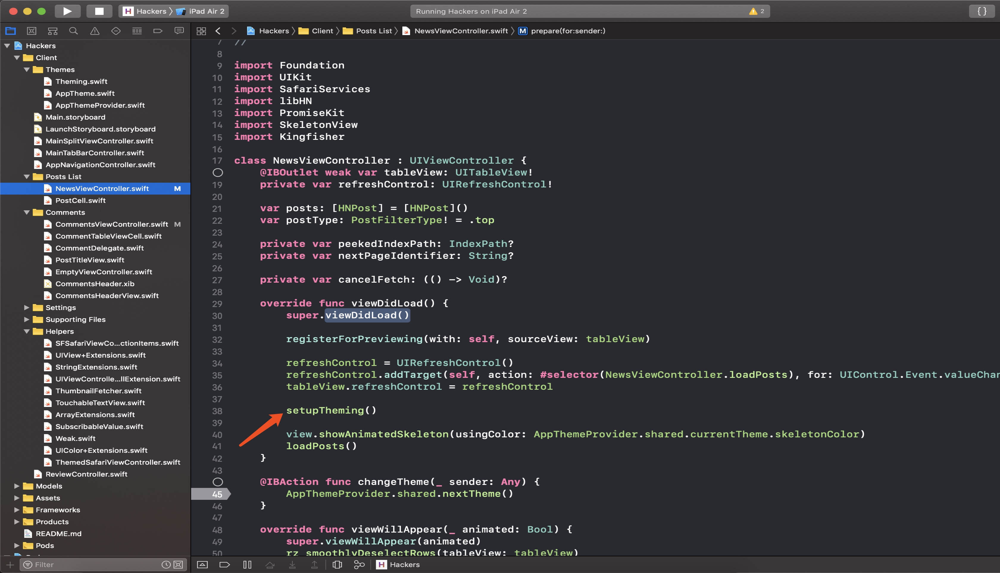
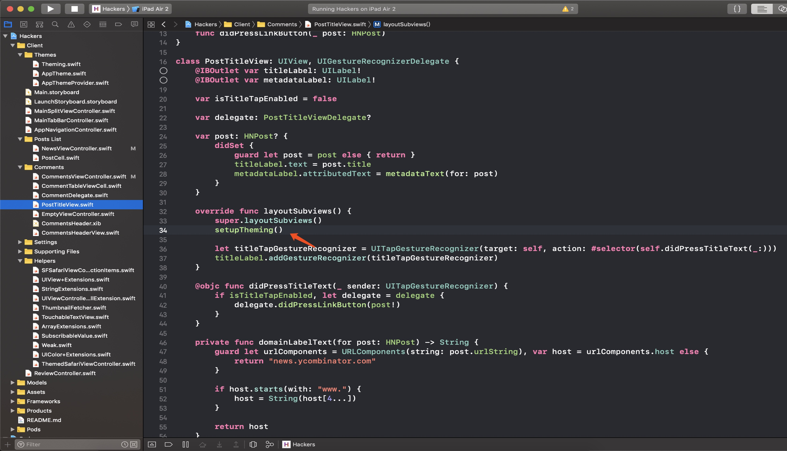
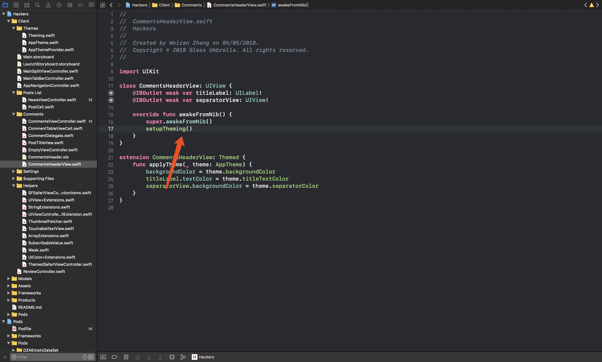

今天刷Github，看到一个开源App Hackers源码里面关于更换主题写的挺好的。
原先我的想法就是切换语言和更新主题发送个通知就好了，然后每个页面都监听下这个通知。
但是这个项目里面采用的是每个控制器都注册下，然后当更换主题时把所有注册的控制器都更新下主题
可以看下这部分代码
在Theming.swift文件中定义了ThemeProvider 和 Themed协议
/// Describes a type that holds a current `Theme` and allows
/// an object to be notified when the theme is changed.
protocol ThemeProvider {
/// Placeholder for the theme type that the app will use
associatedtype Theme
/// The current theme that is active
var currentTheme: Theme { get }
/// Subscribe to be notified when the theme changes. Handler will be
/// remove from subscription when `object` is deallocated.
func subscribeToChanges(_ object: AnyObject, handler: @escaping (Theme) -> Void)
}
/// Describes a type that can have a theme applied to it
protocol Themed {
/// A Themed type needs to know about what concrete type the
/// ThemeProvider is. So we don't clash with the protocol,
/// let's call this associated type _ThemeProvider
associatedtype _ThemeProvider: ThemeProvider
/// Return the current app-wide theme provider
var themeProvider: _ThemeProvider { get }
/// This will be called whenever the current theme changes
func applyTheme(_ theme: _ThemeProvider.Theme)
}
extension Themed where Self: AnyObject {
/// This is to be called once when Self wants to start listening for
/// theme changes. This immediately triggers `applyTheme()` with the
/// current theme.
func setupTheming() {
applyTheme(themeProvider.currentTheme)
themeProvider.subscribeToChanges(self) { [weak self] newTheme in
self?.applyTheme(newTheme)
}
}
}
根据协议可以如下操作：
final class AppThemeProvider: ThemeProvider {
static let shared: AppThemeProvider = .init()
private var theme: SubscribableValue<AppTheme>
private var availableThemes: [AppTheme] = [.light, .dark]
var currentTheme: AppTheme {
get {
return theme.value
}
set {
setNewTheme(newValue)
}
}
init() {
theme = SubscribableValue<AppTheme>(value: .light)
}
private func setNewTheme(_ newTheme: AppTheme) {
let window = UIApplication.shared.delegate!.window!!
UIView.transition(
with: window,
duration: 0.3,
options: [UIView.AnimationOptions.transitionCrossDissolve],
animations: {
self.theme.value = newTheme
},
completion: nil
)
}
func subscribeToChanges(_ object: AnyObject, handler: @escaping (AppTheme) -> Void) {
theme.subscribe(object, using: handler)
}
func nextTheme() {
guard let nextTheme = availableThemes.rotate() else {
return
}
currentTheme = nextTheme
}
}
extension Themed where Self: AnyObject {
var themeProvider: AppThemeProvider {
return AppThemeProvider.shared
}
}
具体主题的颜色见Theme.swift
由上面的实例我们知道所有页面都是被暂存的，暂存操作为
private var theme: SubscribableValue<AppTheme>
SubscribableValue的具体实现见SubscribableValue.swift，这个结构是一个结构体,如下：
/// Stores a value of type T, and allows objects to subscribe to
/// be notified with this value is changed.
struct SubscribableValue<T> {
private typealias Subscription = (object: Weak<AnyObject>, handler: (T) -> Void)
private var subscriptions: [Subscription] = []
var value: T {
didSet {
for (object, handler) in subscriptions where object.value != nil {
handler(value)
}
}
}
init(value: T) {
self.value = value
}
mutating func subscribe(_ object: AnyObject, using handler: @escaping (T) -> Void) {
subscriptions.append((Weak(value: object), handler))
cleanupSubscriptions()
}
/// Removes any subscriptions where the object has been deallocated
/// and no longer exists
private mutating func cleanupSubscriptions() {
subscriptions = subscriptions.filter({ entry in
return entry.object.value != nil
})
}
}
上面的weak的实现为
/// A box that allows us to weakly hold on to an object
struct Weak<Object: AnyObject> {
weak var value: Object?
}
每个需要更换主题的控制器或者视图都会注册一下，



这个就是协议的默认实现，然后会把当前对象注册一下。
每次赋值的时候都会更新一下所有注册的视图。